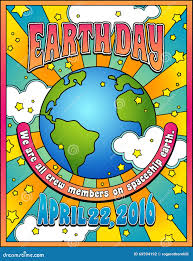
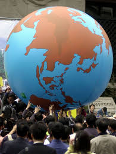
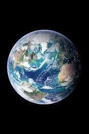
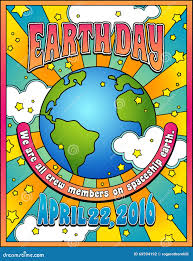
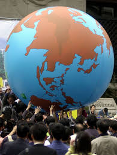
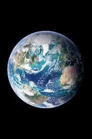

Our earth is a sensitive being that has experienced the negative impact of humankind over the past few hundred years. While there are certainly cycles it goes through naturally, such as the Ice Age, humans have had a great negative impact on it since the Industrial Revolution. The climate is changing and we're experiencing more drastic weather events, melting icebergs leading to rising sea levls, and disruptions to biodiversity. All of this not only impacts the earth itself, but the health of all the beings that occupy it, including humans. There are dozens of ways that each individual person can help our environment to ensure its health for generations to come.
Small Steps, Big Impact
Here are a few things you can do:
- Avoid using plastic
- Purchase from companies that focus on sustainability
- Eat food that is good for you and for the planet
- Volunteer at organizations working to protect our environment
 




